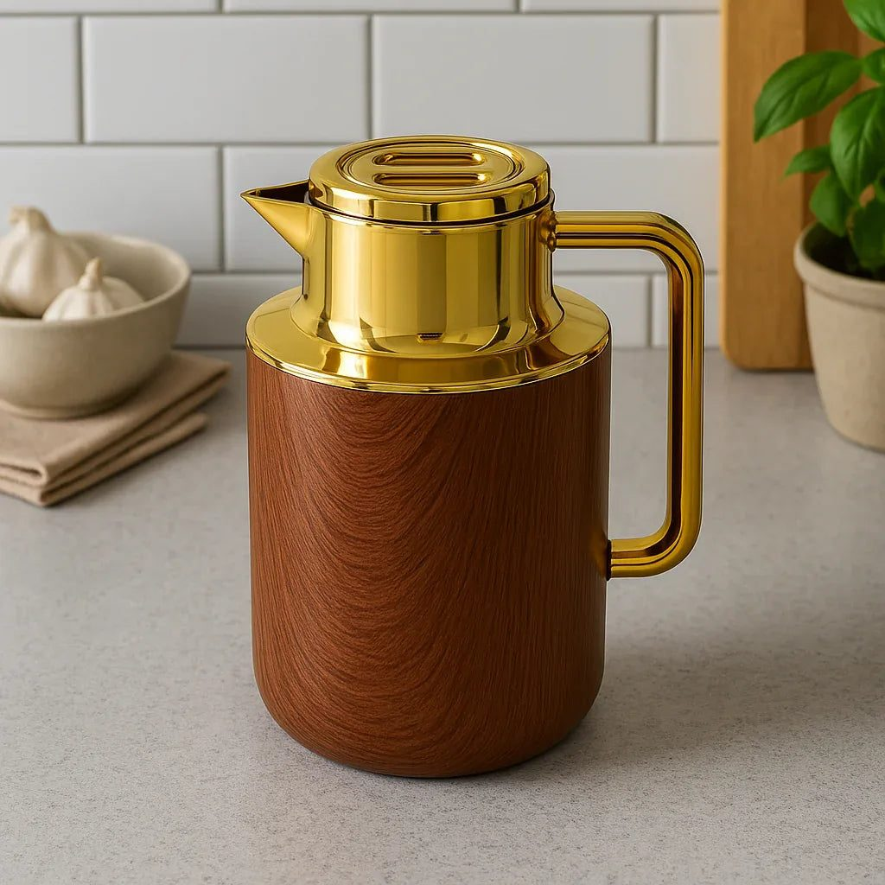
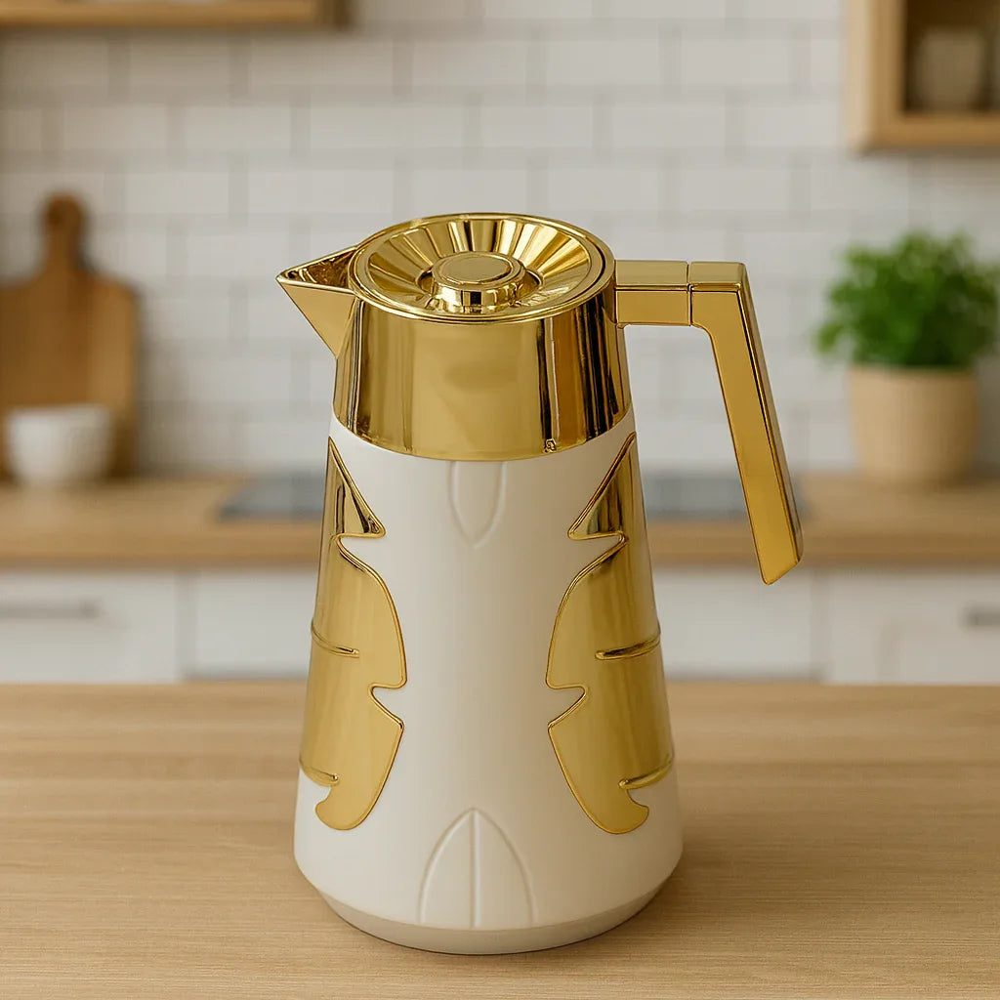

- Choose the right time and place
- The flask is the hero
- Picnic food that travels well
- Comfort essentials
- Keeping children entertained
- Clean up and leave nothing behind
- Safety and practical tips
- Final thoughts
When the fog lifts on a December or January afternoon, Lahore's parks fill with families. Bagh-e-Jinnah's old trees, the wide lawns of Jilani Park, Jallo Park with its zoo and boating, and the green spaces of Model Town and Gulberg become the city's living rooms. Mats are spread on the grass, children run around, and someone pours steaming chai from a flask. A winter picnic is one of the simplest pleasures of Lahori life.
A little preparation makes the day comfortable for everyone, from toddlers to grandparents. This guide covers what to pack.
Choose the right time and place
Winter days are short, and the sun is warmest between eleven and three. Arrive by late morning so you get the best of the light. Check whether the park allows picnics on the grass and if there are entry fees or rules about food. Weekends are crowded, so a weekday or early Sunday visit is more peaceful. On smoggy days, when the air quality index is very high, it is better to stay indoors, particularly with children and elders.
The flask is the hero
Nothing makes a winter picnic like hot chai. A good insulated flask keeps tea or coffee hot for several hours. Look for a one-litre vacuum flask with a tight lid, which is enough for a family of four or five. Pre-warm it by filling it with boiling water for five minutes, then empty it and pour in your chai. Some flasks come in elegant finishes with golden lids, which look lovely on a picnic mat and are also used at home for guests. Many families buy theirs from Trenducts, where you can find insulated flasks for picnics and travel.

Picnic food that travels well
Choose food that tastes good warm or at room temperature and is easy to eat outdoors:
- Chicken sandwiches or shami kebab rolls
- Aloo or chicken samosas, kept warm in foil
- Fruit like oranges, kinnow, guavas and apples, which are in season
- Dry fruit, peanuts and gajak, the classic winter snacks
- Homemade cake or biscuits with the chai
- Boiled eggs with salt and pepper
Pack food in airtight containers and keep hot items wrapped in foil and a towel.
Comfort essentials
Winter grass can be damp and cold. Bring a waterproof mat or a plastic sheet under your picnic blanket. Pack shawls and extra sweaters, since temperatures drop quickly once the sun starts setting. A few cushions make sitting comfortable for elders. Folding chairs are a good idea for grandparents who cannot sit on the ground.
Keeping children entertained
Parks offer plenty of space, but a few items help. Bring a football, a cricket bat and tennis ball, a frisbee or a skipping rope. Many parks have swings and slides; check them for safety. Keep an eye on small children near ponds and lakes, especially at Jallo and Racecourse Park.

Clean up and leave nothing behind
Pakistani parks suffer from litter after weekends. Bring rubbish bags and take all waste with you or put it in proper bins. Do not feed wild animals junk food. Leave the spot cleaner than you found it; children learn by watching.
Safety and practical tips
Carry a small first-aid kit, wet wipes and hand sanitiser. Keep valuables close, as busy parks can attract pickpockets. Park your car in designated areas. If someone in the group has asthma, carry inhalers, as winter air can trigger symptoms.
Final thoughts
A winter picnic in Lahore needs nothing fancy: some sunshine, a mat, good food, warm shawls and a flask of hot chai. Choose a clear day, pack thoughtfully and clean up after yourselves. These simple afternoons in the park become some of the happiest family memories of the year.